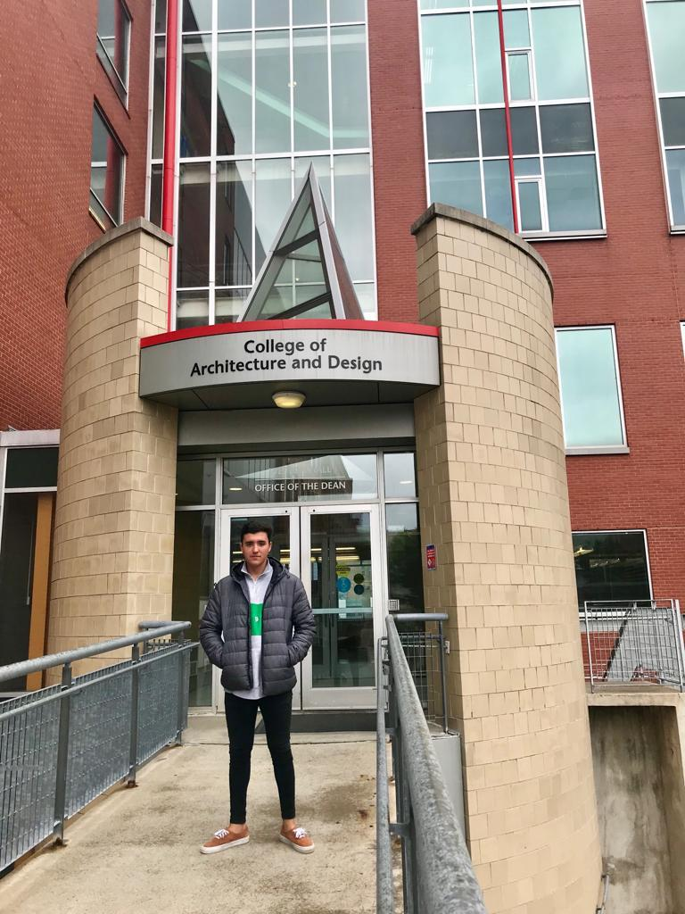
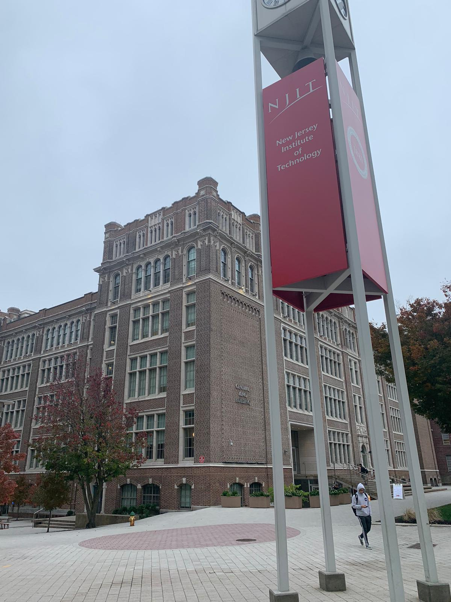
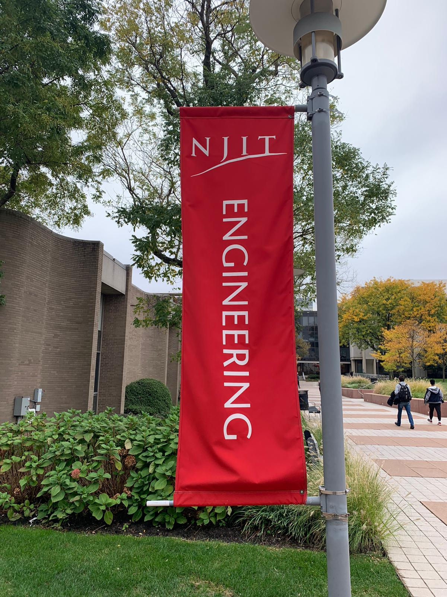

Biography & Education
Juan Carreto grew up in Madrid, Spain and is currently studying Industrial Design (Engineering) in Madrid Spain (Universidad Nebrija); However he spent one yer at NJIT where he took several classes of design and Engineering. Those classes were, Materials and processes, Modelling and Protoyping, Introduction to Website Development, Marketing... he used this gap year to get a complete vision of what Industrial Design is and learn about every aspect. He learned a different perspective which was really helpful for his education.


